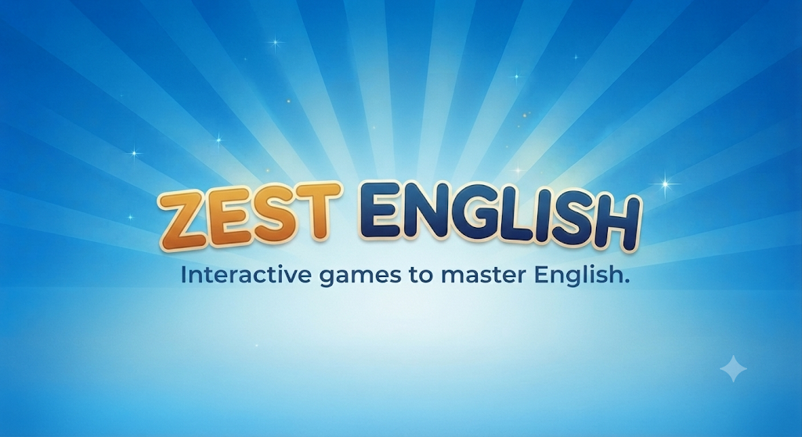

Zest English develops engaging educational mobile games that make language learning interactive and accessible for all ages.
Our latest release, Jack and the Temple of Shadows, is a narrative adventure designed to help students master the prepositions of time and place: at, in, and on. Players progress through the story only by using the correct grammar, providing a seamless, drill-free learning experience. Available now on Google Play.
Contextual and narrative-based learning significantly improves language acquisition. By placing grammar rules within a story, learners connect words to situations rather than memorizing abstract lists. This method is highly effective for language academies and corporate training environments, where precise and accurate English communication is essential.
These core prepositions define the boundaries of time and place. The only way they stick is by using them in context—the temple forces this precision; if your grammar is wrong, the path is blocked.